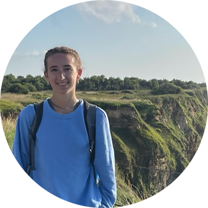

<html>
    <head>
        <link href="style.css" rel="stylesheet">
        <title> Emily Garceau </title>
        <link rel="stylesheet" href="https://cdnjs.cloudflare.com/ajax/libs/font-awesome/5.15.4/css/all.min.css">
    </head>
</html>

<body>
    <header id="header">
        <h1><b>Emily</b> Garceau</b></h1>
        <hr>
        <h2><b>Senior Computer Engineering Major</b></h2>
        <hr>
    </header>

    <main>
        <article id="mainLeft">
            <section>
                
            </section>
            <section>
                <h2><b>Contact</b></h2>
                <p>
                    <i class="fa fa-envelope" aria-hidden="true"></i>
                    <a href="mailto:garceauemily@gmail.com">garceauemily@gmail.com</a>
                </p>
                <p>
                    <i class="fa fa-envelope" aria-hidden="true"></i>
                    <a href="mailto:egarcea@clemson.edu">egarcea@clemson.edu</a>
                </p>
                <p>
                    <i class="fab fa-linkedin" aria-hidden="true"></i>
                    <a href="https://www.linkedin.com/in/emily-garceau">linkedin.com/in/emily-garceau</a>
                </p>
            </section>
            <section>
                <h2><b>About</b></h2>
                <p>Hello! My name is Emily Garceau, and I am a senior Computer Engineering major in the process of applying to PhD programs. My interests lie in the field of <b>Human Computer Interaction</b>, specifically <b>wearable technology</b> and <b>mobile health</b>.</p>
            </section>
            <section>
                <h2><b>Technical Skills</b></h2>
                <p>C/C++</p>
                <p>FORTRAN</p>
                <p>Visual Studio Code</p>
                <p>GDB</p>
                <p>MATLAB</p>
                <p>Unix</p>
                <p>Logisim</p>
                <p>LTspice</p>
                <p>Adobe Creative Suite</p>
                <p>Digital Works</p>
                <p>VHDL</p>
                <p>Prolog</p>
                <p>HTML</p>
                <p>CSS</p>
                <p>LaTeX</p>
            </section>
            <section>
                <h2><b>Relevant Courses</b></h2>
                <p>Electric Circuits</p>
                <p>Electronics</p>
                <p>Logic & Computing Devices</p>
                <p>Computer Organization</p>
                <p>Microcontroller Interfacing</p>
                <p>Operating Systems</p>
                <p>Digital Computer Design</p>
                <p>Integrated System Design</p>
                <p>Linear Control Systems</p>
                <p>Computer Vision</p>
                <p>Random Signal Analysis</p>
                <p>Computer Ethics</p>
                <p>Linear Algebra</p>
                <p>Discrete Mathematical Structures</p>
            </section>
            <section>
                <h2><b>Professional Skills</b></h2>
                <p>Technical Writing</p>
                <p>Organizing Meetings</p>
                <p>Mentoring/Tutoring</p>
                <p>Project Management</p>
                <p>Research & Analytics</p>
            </section>
        </article>
        <article id="mainRight">
            <section>
               <h2><b>Education</b></h2>
               <p>
                    <h3>Bachelor of Science in <b>Computer Engineering</b></h3>
                    <h4><b>Clemson Univeristy Honors College</b> | 2019-2023</h4>
               </p>
               <ul>
                <li>GPA: 4.0</li>
                <li>Presidnet's List 2019-2022</li>
                <li>Palmetto Fellows Scholarship Recipient</li>
               </ul>
            </section>
            <section>
                <h2><b>Research</b></h2>
                <h3>Data Compression - NSF REU</h3>
                <p>Beginning late Fall 2022, I will be researching data compression methods as a <b>National Scholars Foundatin REU</b> student with <u><z href="https://jonccal.people.clemson.edu/">Dr. Calhoun</z></u> at Clemson Univeristy</p>
                <h3>Tracking Finger and Hand Motion Related to Eating</h3>
                <p>Beginning Spring 2023, I will be researching different forms of <b>wearable technology</b> to detect eating behavior under the guidance of <u><z href="https://cecas.clemson.edu/~ahoover/">Dr. Hoover</u></z> at Clemson Univeristy</p>
            </section>
            <section>
                <h2><b>Work Experience</b></h2>
                    <p>
                        <h3><b>Cadence Design Systems</b> | WFO Application Engineer Intern</h3>
                        <h4><b>San Jose, CA</b> | May 2023-August 2023</h4>
                    </p>
                    <ul>
                        <li>Fundamentals in design, verification, HDLs, Synthesis and timing</li>
                        <li>Embedded software development and HW/SW codesign and co-verification</li>
                        <li>UNIX , C/C++, and scripting languages such as Perl, TCL, Python</li>
                        <li>Digital physical design and implementation</li>
                        <li>Sign-off for timing, IR drop, power analysis, SI analysis</li>

                    </ul>
                    <p>
                        <h3><b>Delta Air Lines</b> | Simulator Engineering Co-Op</h3>
                        <h4><b>Atlanta, GA</b> | January 2021-July 2022</h4>
                    </p>
                    <ul>
                        <li>Edited and debugged C and FORTRAN programs implemented using real-time simulation on Unix-based platforms</li>
                        <li> Ensured consistent training experience across simulator fleet by altering code on different host computers and operating systems</li>
                        <li>Improved software efficiency to optimize simulator resources and increase simulator reliability</li>
                        <li>Communicated with departments across company and government agencies to secure documentation for simulator modifications</li>
                        <li>Researched and interpreted aircraft wiring schematics to debug simulation software and maintain data integrity</li>
                        <li>Crafted technical reports detailing coded software modifications</li>
                        <li>Partnered with pilots and instructors to identify and resolve simulator discrepancies to optimize pilot training</li>
                        <li>Successfully on-boarded, trained, and mentored a new co-op student</li>
                        <li>Initiated and scheduled monthly meetings with members of the engineering team and leadership</li>
                        <li>Created a collaborative cross-divisional partnership between two engineering departments</li>
                        <li>Worked with engineers from other companies to troubleshoot and implement software corrections</li>
                    </ul>
                    <p>
                        <h3><b>Clemson University</b> | Undergraduate Teaching Assistant</h3>
                        <h4><b>Clemson, SC</b> | August 2020-December 2020</h4>
                    </p>
                    <ul>
                        <li>Aided general engineering professor by answering questions and explaining material in class of 40+ students</li>
                        <li>Tutored student individuals and groups using collaborative methods to provide support and strengthen understanding</li>
                    </ul>
            </section>
            <section>
                <h2><b>Leadership</b></h2>
                <h3><b>Eta Kappa Nu <u><z href="https://hkn.ieee.org/about">(IEEE-HKN)</z></u></b> - Vice President</h3>
                <p><b>Electrical and Computer Engineering Honor Society</b> for top 1/5 of sophomores, 1/4 of juniors, and 1/3 of seniors </p>
                <p>
                    <ul>
                        <li>Organize annual career fair for 100+ Electrical and Computer Engineering students and 12 companies totaling 20+ representatives</li>
                        <li>Plan and lead monthly meetings for 40+ members and weekly meetings for executive members</li>
                        <li>Maintain attendance records and continuing requirements for each member</li>
                    </ul>
                </p>
                <h3><b>CECAS Undergraduate Student Advisory Board</b> - ECE Representative</h3>
                <p><b>College of Engineering, Computing, and Applied Sciences</b> at Clemson University</p>
                <p>
                    <ul>
                        <li>Develop outreach events for students in the college to enhance the undergraduate experience</li>
                        <li>Provide feedback to the Dean's office on relevant issues to help guide or influence college-level decisions</li>
                        <li>Attend bimonthly board meetings and represent the ECE department student body</li>
                        <li>Communicate information about ECE department activities, policies, and processes with board members from other departments</li>
                        <li>Distribute information to the ECE department's student body</li>
                    </ul>
                </p>
            </section>
            <section>
                <h2><b>Honors</b></h2>
                <p>
                    <ul>
                        <li><b>Eta Kappa Nu Zeta Iota</b> - Electrical and Computer Engineering Honor Society at Clemson University for top 1/5 of sophomores, 1/4 of juniors, and 1/3 of seniors</li>
                        <li>Appointed to the <b>CECAS Undergraduate Student Advisory Board</b> by the chair and faculty advisor of the Holcombe Department of Electrical and Computer Engineering to serve as one of three ECE student representatives</li>
                        <li>Invited to attend Clemson University's annual <u><b><z href="https://www.clemson.edu/cecas/departments/ece/faculty_staff/boardmembers.html">ECE External Board of Advocates</z></b></u> 2022 meeting as one of five ECE students to provide undergraduate feedback to industry leaders</li>
                        <li><u><b><z href="http://honors.sites.clemson.edu/">President's List</z></b></u> at Clemson Univeristy Fall 2019-Spring 2022</li>
                    </ul>
                </p>
            </section>
        </article>
    </main>
</body>